Setelah mempelajari IP, kita akan mengubahnya menjadi sesuatu yang dapat dibaca oleh manusia
berikut langkah-langkah konfigurasi dns:
1. Masuk menjadi super user dan ganti direktori menjadi /
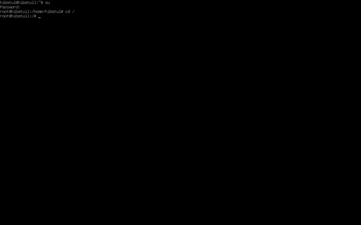
2. Kemudian masukkan disk iso debian dengan menklik ribbon peranti dan drive optik. Setelahnya tulis apt-get install bind9 dnsutils
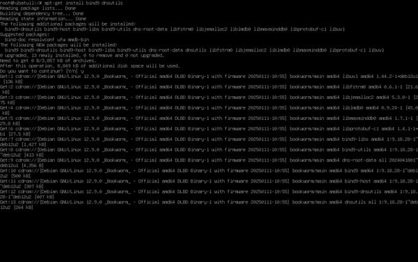
3. Setelah selesai proses instalasi, ganti direktori menjadi /etc/bind
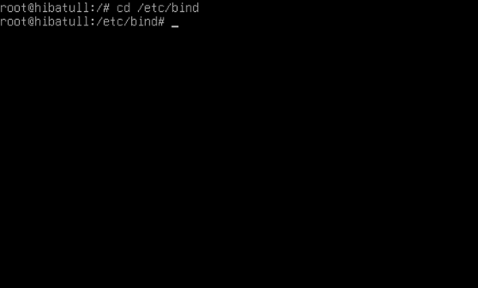
4. Disini saya menggunakan perintah copy paste untuk membuat dua file baru bernama:
db.1 dan db.2
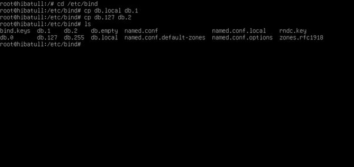
5. Kemudian saya mengganti isi dari db.1
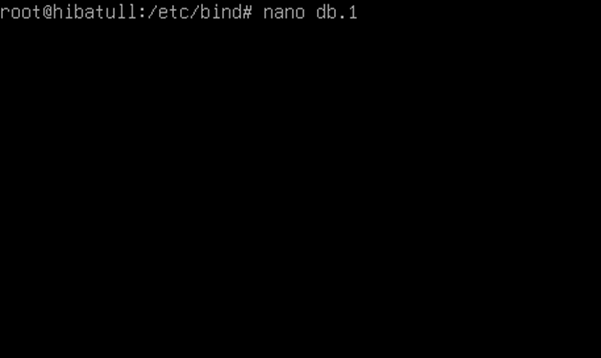
6. Ubah isi dari file ini yang awalnya seperti ini
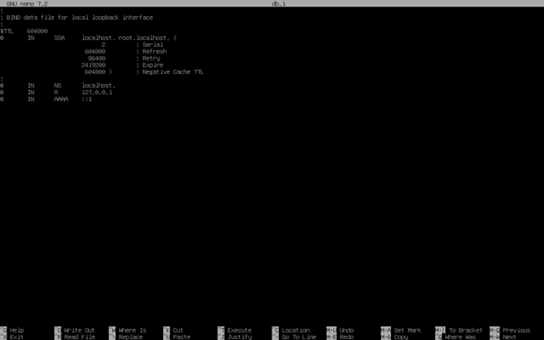
7. Ubah menjadi seperti ini
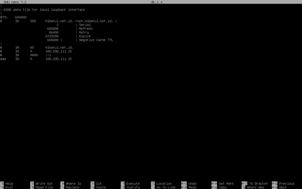
8. Kemudian edit db.2
9. Ubah isi filenya menjadi seperti ini
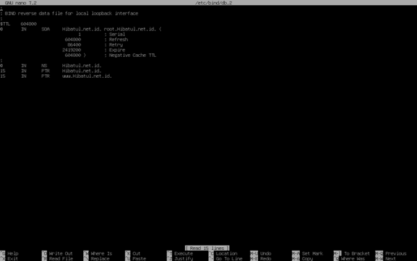
10. Kemudian ubah file named.conf.local
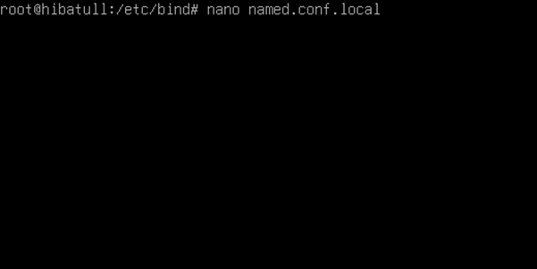
11. Ubah yang awalnya seperti ini
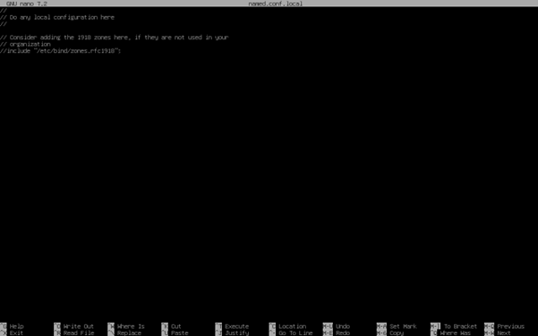
12. Menjadi seperti ini
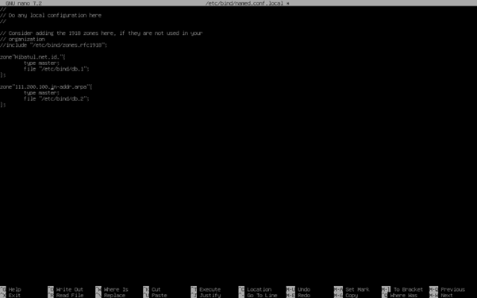
13. Kemudian ubah file resolv.conf
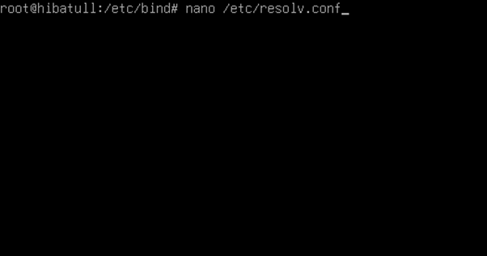
14. Ubah isi file menjadi seperti ini
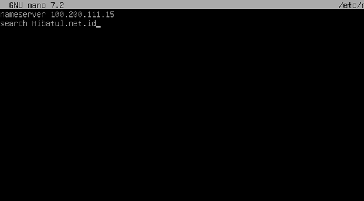
15. Kemudian ubah file hosts
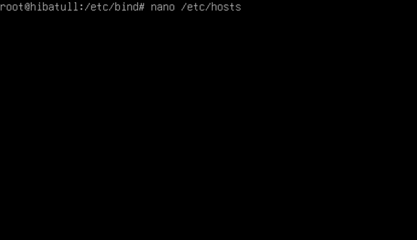
16. Ubah isi file menjadi seperti ini
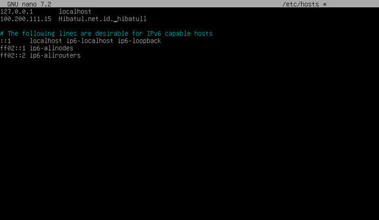
17. Kemudian restart bind9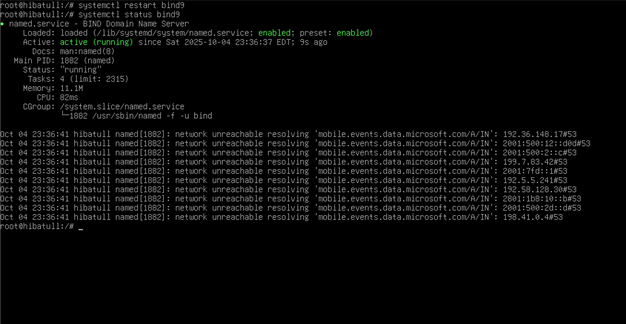
18. Gunakan perintah nslookup (nama domain[saya: Hibatul.net.id]) dan juga nslookup (alamat ip)
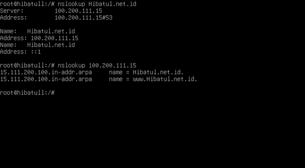
19. Terakhir, gunakan perintah nslookup (nama domain) dan juga ping (nama domain) di command prompt atau terminal
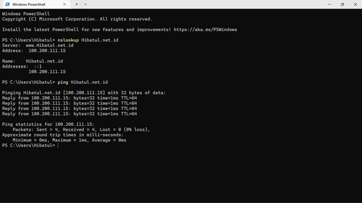